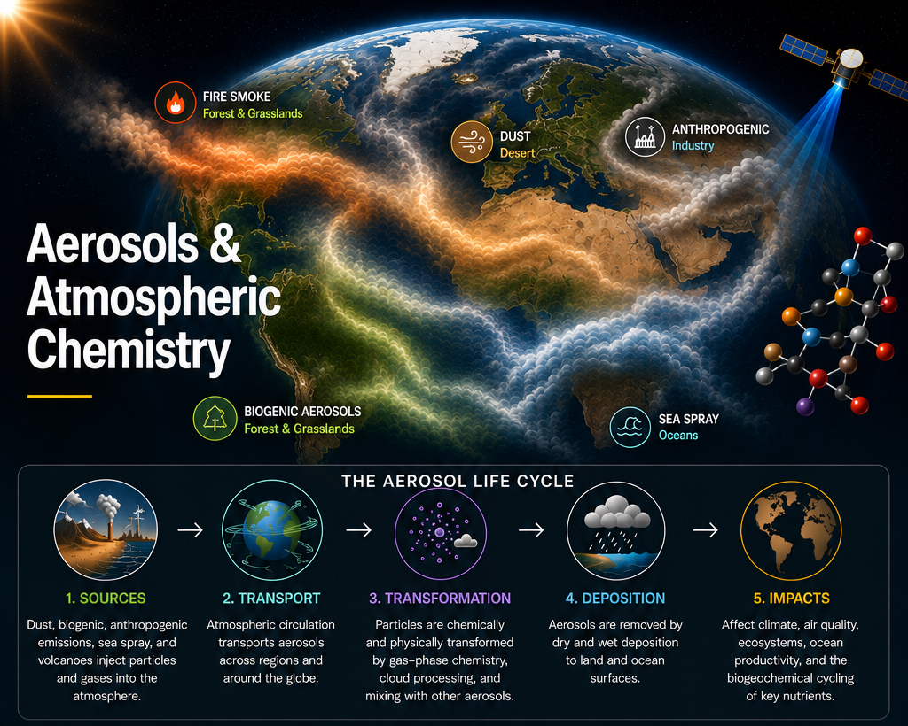

‹ Research ThemesOur Research Themes
Representing mineralogy and iron cycling in Earth System models
Quantifying mineral dust emissions, mineralogy, and iron cycling in climate models.
Emissions, composition, aging, and climate effects of biogenic aerosols
Understanding natural aerosol sources from forests and grasslands, and their interactions with atmospheric chemistry and climate.
Anthropogenic aerosols as a globally important source of bioavailable iron
Investigating the transport and deposition of iron, phosphorus, and nitrogen to terrestrial and ocean ecosystems.
Preindustrial fire emissions and uncertainty in aerosol radiative forcing
Constraining aerosol radiative forcing and reducing uncertainty in aerosol–cloud–climate interactions.
Future aerosol burdens, deposition, and climate feedbacks
Improving aerosol representation in CAM, CESM, and next-generation Earth System models.
Why Aerosols Matter
Air Quality
Aerosols drive PM2.5 exposure and influence human health.
Climate
Aerosols affect Earth’s radiative balance and climate feedbacks.
Ocean Productivity
Atmospheric nutrients can stimulate phytoplankton growth.
Ecosystem Health
Nutrients and pollutants influence terrestrial and ocean ecosystems.
Prediction
Better aerosol processes improve Earth System model projections.